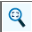
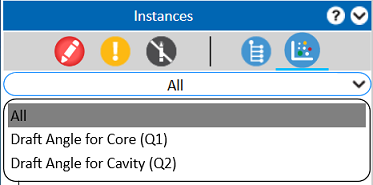
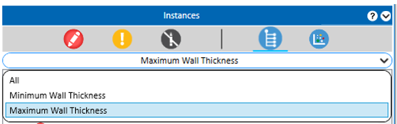
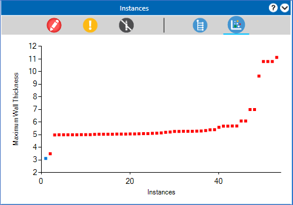
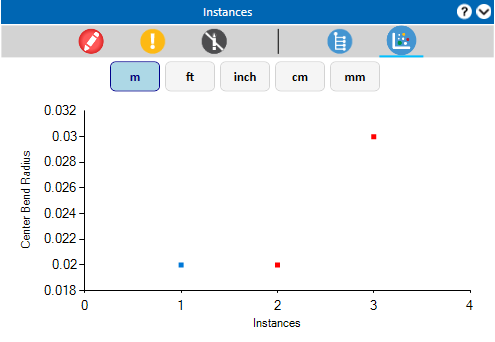

DFMPro は、解析によって製造時に発生する可能性のある問題を特定した場合にエラーを報告します。このレポートは、必ずしもその形状が加工不可能であることを意味するものではありません。あくまで、追加検討が必要な設計箇所を示すものです。これらの箇所を加工するには、工程パラメータの調整や、特に量産時において高価な工具など、特別な配慮が必要となる場合があります。
報告されたエラーが利用環境において重要でない場合、設計者はそのエラーを無効として指定し、以降の解析実行において無視することができます。
結果ツリー内の 違反インスタンス をクリックし、無視するための任意のコマンドを選択します。このツールバーには、レビュー詳細、インスタンスの無視、類似インスタンスをすべて無視、ヘルプなどのオプションが含まれています。
必要に応じて解析を再実行し、同一の違反インスタンスが報告されなくなったことを確認してください。
 レビュー詳細 オプションをクリックすると、レビュー詳細ダイアログボックス 内で対象インスタンスの画像を取得できます。
レビュー詳細 オプションをクリックすると、レビュー詳細ダイアログボックス 内で対象インスタンスの画像を取得できます。
報告された違反インスタンスが重要でない場合は、 インスタンスを無視 オプションを選択します。選択した違反インスタンスのアイコンは変更され、ツリーの下部へ移動します。
類似インスタンスをすべて無視 オプションを選択します。
ヘルプ ボタンをクリックすると、選択したルールの情報や推奨事項を確認できます。
インスタンスにズーム オプションをクリックすると、特定の違反インスタンスを表示できます。
Note:
インスタンスにズーム コマンドは、DFMPro 設定ダイアログボックス の「インスタンスハイライト」タブで 違反インスタンス選択時にズーム オプションが選択されている場合のみ使用できます。

全体表示にズーム オプションをクリックすると、選択したインスタンスをハイライト表示した状態で、グラフィック領域に部品をフィットさせて表示します。
結果ツリー内の 無視されたインスタンス をクリックし、任意のコマンドを選択します。このツールバーには、レビュー詳細、インスタンスの復元、類似インスタンスをすべて復元、ヘルプなどのオプションが含まれています。
無視された違反インスタンスが必要になった場合は、無視 インスタンスをクリックし、 インスタンスを復元 オプションを選択すると、失敗ルール一覧に復元されます。
パーツレベルのルールの場合、すべての類似無視インスタンスを復元したい場合は、 類似インスタンスをすべて復元 オプションを選択すると、失敗ルール一覧に復元されます。
アセンブリレベルのルールの場合、同一のソースおよびターゲットのコンポーネントペアで、同じ実測値を持つすべての類似無視ケースを復元できます。
|
|
推奨事項の結果を非表示にするために使用します。 |
|
|
アラートインスタンスを非表示にするために使用します。 |
|
|
無視されたインスタンスを非表示にするために使用します。 |
|
|
ツリービュー（クイック可視化）で結果を表示するために使用します。 |
|
|
散布図（クイック可視化） |
ルール構成ダイアログボックスでパラメータを持つルールに対して、パラメータのドロップダウンが使用可能になります。結果を確認および修正するために、一覧から違反インスタンスを特定するのに役立ちます。

例:
鋳造モジュールの「均一な肉厚」ルールでは、「最小肉厚」および「最大肉厚」パラメータに基づいて、DFMPro のインスタンスを容易にフィルタし、その件数を把握できます。次の例では、ドロップダウンから最小および最大肉厚を選択できます。

散布図の結果表示を使用することで、標準的な推奨値から大きく外れている重要な違反インスタンスを迅速に特定できます。
例: 最大肉厚の画像では、右側上部の点が肉厚 10 mm ～ 12 mm の範囲にあることを示しています。これらの結果に重点的に注意する必要があります。左マウスボタンを押しながら DFMPro ペインをドラッグすることで、これらのインスタンスを素早く確認できます。

結果に複数単位の違反インスタンスが含まれている場合、設計者は特定の単位ボタンをクリックすることで、散布図に結果を表示できます。
